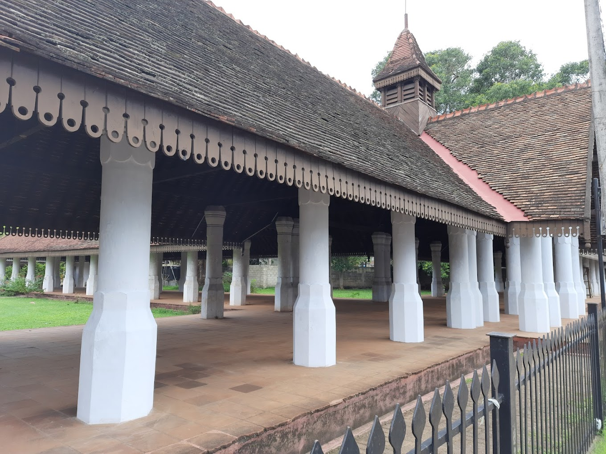

About Old Dutch Market

The Old Nupe Market or the Old Dutch Market is a historic, European-built structure in
Matara. The building was built in the late eighteenth century, probably by the British,
but possibly by the Dutch. It was used to house the Nupe market.
The building is located at the Nupe junction on Nilwala Bypass road about 2 km distance
from the Matara Bus station. The british constructed this building during their
colonial period to be used as a marketplace.
The building is built in a distinctive ‘T’ shape which is perfectly symmetrical.
Presently, the Old Dutch Trade Centre still showcases how it would have been during its
heyday, as it still reverberates with commercial activity.